2025年北京市中考数学真题 · 数学解答题 第24题 · 对应解析
24. 如图，过点P作 的两条切线，切点分别为A，B，连接
的两条切线，切点分别为A，B，连接 ，
， ，
， ，取的中点C，连接
，取的中点C，连接 并延长，交于点D，连接
并延长，交于点D，连接 ．
．
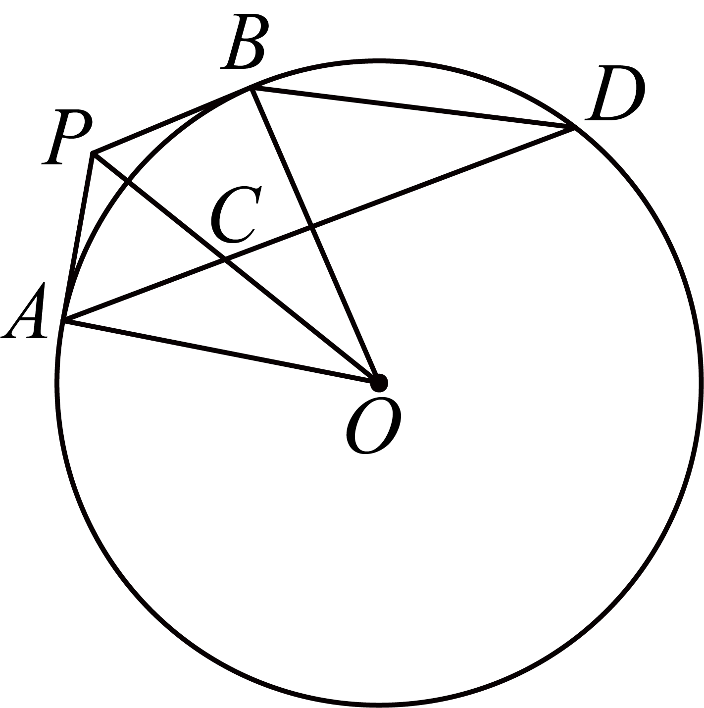
（1）求证： ；
；
（2）延长交 的延长线于点E．若
的延长线于点E．若 ，
， ，求
，求 的长．
的长．
【答案】（1）见解析；
（2）长为44．
【解析】
【分析】（1）利用切线长定理得平分
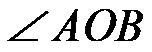
，利用圆周角定理得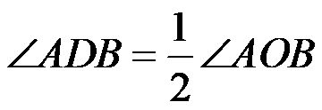
，等量代换即可证明；（2）延长交于点F，连接 ，利用条件求出线段长，再利用角度转换证明三角形相似，最后根据相似求得长．
，利用条件求出线段长，再利用角度转换证明三角形相似，最后根据相似求得长．
【小问1详解】
证明： ，分别切于A点，B点，
，分别切于A点，B点，
 平分，
平分，
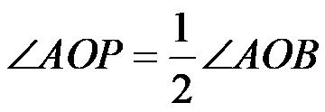
，又，
，
．
【小问2详解】
延长交于点F，连接，则，
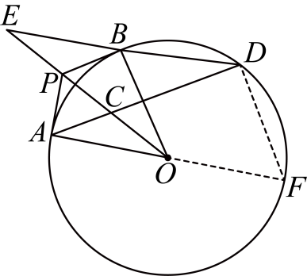
，分别切于A点，B点，
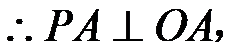
C为的中点，
，
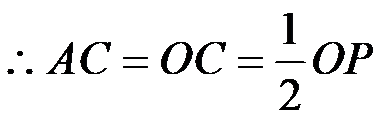
，又，，
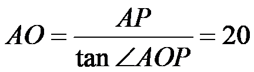
，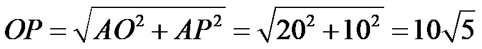
，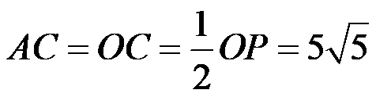
，，，
，
又
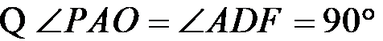
，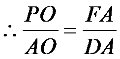
，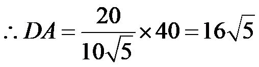
，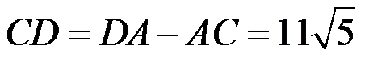
，，，
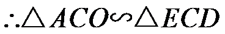
，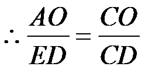
，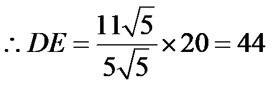
．【点睛】本题主要考查切线长定理，圆周角定理及推论，勾股定理，三角函数，相似三角形的判定与性质等知识点，熟记切线长定理，圆周角定理，并且能根据题意作出合适的辅助线是解题的关键．